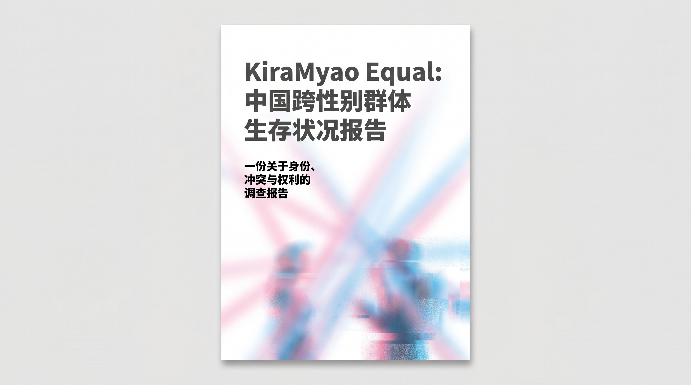
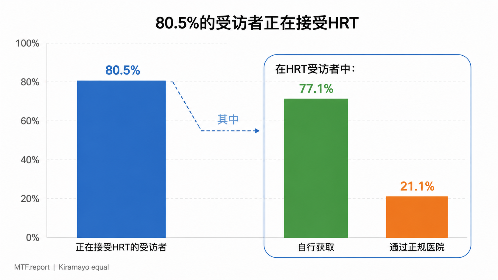
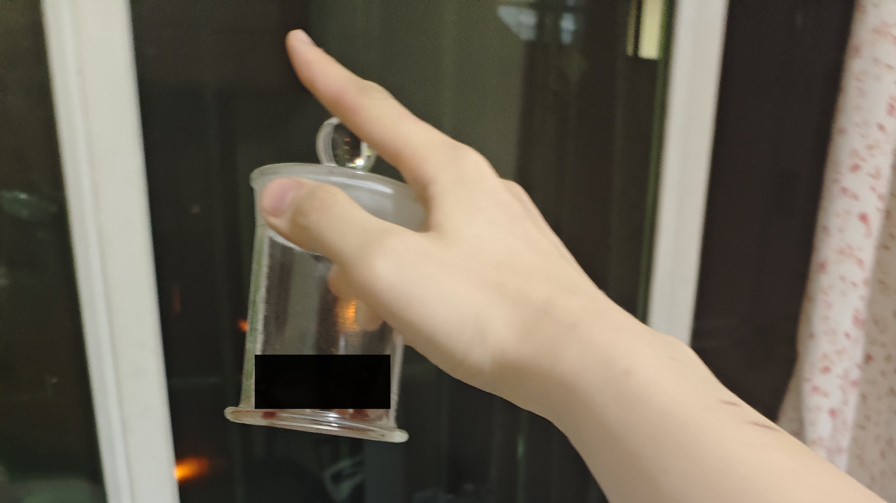
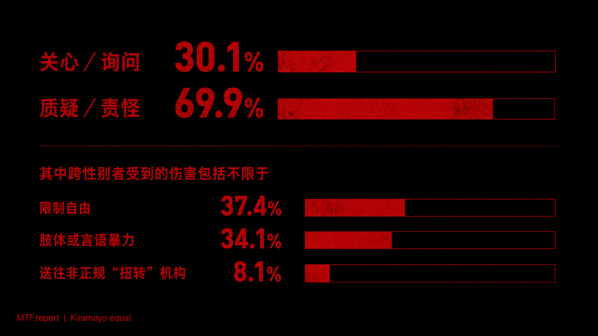
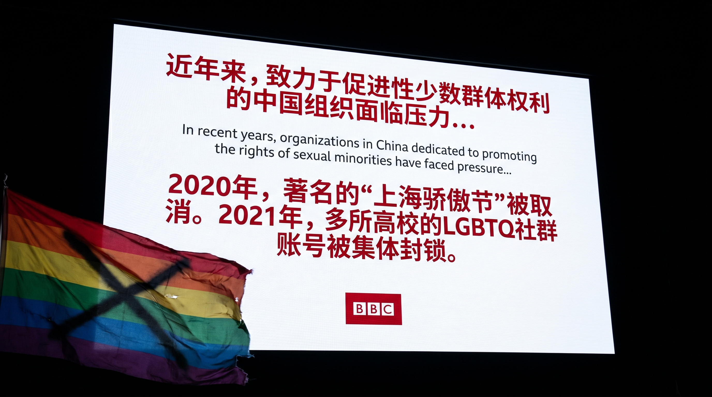

KiraMyao Equal：中国跨性别者现状报告

一、 执行摘要
本报告基于2019年至2025年间的多项定量调研与定性访谈，系统审视了中国大陆跨性别群体的生存现状。数据显示，尽管社会对性别多元的讨论有所增加，跨性别者在医疗、家庭、教育与就业等核心领域仍面临系统性壁垒。严苛的医疗门槛（特别是针对成年人的“家长同意”要求）迫使大量个体转向极具风险的非正规激素获取渠道；超过七成的未成年及青年跨性别者在家庭与校园中遭遇排斥甚至暴力，导致极高的辍学率与心理健康危机。尽管互联网为社群提供了宝贵的互助网络，但线下资源的严重匮乏与公共空间的收紧，使得这一群体的生存处境依然高度隐匿且脆弱。在庞大的统计数据背后，是一个个在夹缝中努力寻求真实与尊严的普通生命。
二、 详细大纲
- 执行摘要
- 研究范围与方法（资料来源、方法论与局限性说明）
- 总体现状：年龄结构与心理危机（人口学特征、精神健康基础数据）
- 医疗获取与身体自主权
- 制度门槛与“家长同意”的悖论
- 激素疗法（HRT）的“灰色地带”与自救
- 家庭与未成年人困境
- “炸柜”与家庭排斥
- “扭转治疗”与家庭暴力
- 教育与就业环境
- 校园霸凌与学业中断
- 职场隐形歧视与经济边缘化
- 社群与公共空间
- 线上互助网络的重构与风险
- 线下支持资源的匮乏（注：包含机构审查相关说明）
- 2020–2025 趋势演变（数据对比与环境变化）
- 个体经验与案例（生命叙事的补充）
- 资料局限说明（严格界定资料边界）
- 结论与建议
三、 正文
1. 研究范围与方法
本报告的分析基础严格限定于四份核心文献：国际特赦组织《“我需要家长同意才能做自己”》（2019）、《北同文化2021全国跨性别健康调研报告》（2021）、《中国大陆及港澳台跨性别社群生存现状简报》（2025），以及MtF.Report《跨性别人群泛问卷调查阶段性结果报告》（2025）。不同年份的调查口径与样本存在差异，本报告采取并列呈现的方式，不强行统一冲突数据。致谢各位文献贡献者，感谢所有提供帮助者。
2. 总体现状：年龄结构与心理危机
问题：跨性别群体的自我觉察呈现明显的低龄化趋势，但伴随而来的是极高的心理健康风险。 证据：在多份资料中反复出现的是该群体的年轻化特征。〔北同文化/2021〕指出，极大多数跨性别者在18岁前便开始对性别认同产生自我觉察；〔MtF.Report/2025〕的泛问卷调查显示，出生于2000–2010年的青少年占总样本的绝大多数，且12-16岁群体显著增加。在精神健康方面，〔MtF.Report/2025〕显示高达72%的受访者自报存在抑郁障碍，81.7%曾有过自杀意念或尝试。

分析：年轻一代通过互联网更早地接触到性别认同概念，从而提早确立了自我认知。然而，支持系统的建设远未跟上他们觉察的速度。 影响：这种认知与现实环境的脱节，导致大量青少年陷入孤立无援的境地，超过六成受访者曾有过自我伤害行为〔MtF.Report/2025〕。 总结：这意味着，对于一部分跨性别青少年来说，越早认识真实的自己，往往意味着越早开始独自面对巨大的生存重压。
3. 医疗获取与身体自主权
问题：现行医疗规范的严苛门槛，实质上剥夺了许多跨性别者的身体自主权。 证据：依据《性别重置技术管理规范（2022年版）》，进行性别确认手术必须满足年满18岁、未婚、无犯罪记录，且最关键的是——必须取得直系亲属的知情同意。在激素替代疗法（HRT）方面，〔MtF.Report/2025〕显示，80.5%的受访者正在接受HRT，但高达77.1% 的人是通过线上代购或药商获取，仅有21.1%通过正规医院。

分析：尽管法律规定18岁即为完全民事行为能力人，但医疗实践中强制要求“家长同意”，这不仅缺乏医学合理性，更让大量已成年但无法获家庭接纳的跨性别者陷入死局。缺乏针对激素疗法的官方指南，导致正规医疗资源极度匮乏。 影响：为了缓解强烈的性别不一致带来的焦虑，许多人不得不通过“灰色网络”购买药物，成为自行用药的“药娘”。这不仅带来了极大的假药风险和肝脏损伤隐患，部分绝望的个体甚至尝试极其危险的“自行动手术”〔Amnesty/2019〕。

总结：在制度的空白与壁垒面前，跨性别者对身体的改造往往成为一场缺乏安全网的孤独冒险。4. 家庭与未成年人困境
问题：对于未成年及青年跨性别者而言，家庭往往不是避风港，而是最严峻的压迫来源。 证据：调查显示，近九成的原生家庭无法完全接受自己的跨性别子女〔简报/2025〕。〔MtF.Report/2025〕揭示了一个残酷的现象：70.4%的受访者是因为HRT导致的身体变化而被家人被动“炸柜”（被迫出柜）。“炸柜”后，近70%的家长反应是质疑与责怪，部分甚至采取限制自由（37.4%）或肢体/言语暴力（34.1%）。

分析：传统观念（如传宗接代、固有性别角色）是家庭拒斥的主要原因。由于缺乏社会支持体系，未成年跨性别者在经济和生活上高度依赖家庭（超半数中高度依赖），这使得他们在面对家庭暴力或被强制送往“扭转治疗”机构时，几乎毫无反抗能力。 影响：出柜依然是一件危险的事情，家庭的不接纳直接导致跨性别者出现重度抑郁。正如一位受访者姿佳所言：“我的家人让我压抑住自己的性别不一致，结婚生子，这样的话全家人都会高兴。”〔Amnesty/2019〕。 总结：这种情况并非孤立存在。当亲情与顺从出生性别深度绑定时，许多年轻人不得不在“伪装生存”与“失去家庭”之间做出残酷的抉择。5. 教育与就业
问题：隐形的制度歧视导致跨性别者在学业和职业发展上频繁遭遇中断。 证据：〔北同文化/2021〕显示，70.8%的跨性别学生曾在校园遭受霸凌。到了2025年，〔MtF.Report/2025〕的数据揭示了令人担忧的教育流失率：47.7%的受访者有休学或辍学经历。在就业端，跨性别者的失业风险约为社会平均水平的3倍，由于法律未将“性别认同”纳入反歧视范畴，C先生案、小马案等诉讼虽引发关注，但维权依然艰难〔简报/2025〕。
分析：校园缺乏多元性别教育和反霸凌干预，使得跨性别学生长期处于敌意环境中。而学历证件无法轻易更改性别标记，成为了他们踏入职场的第一道不可逾越的鸿沟。 影响：学业中断和求职受挫，迫使相当比例的跨性别者流向自由职业、网络主播或灰色产业，长期处于经济不稳定和社会边缘状态。 总结：一个社会的包容度，往往体现在它是否允许少数群体拥有一条平庸但安稳的世俗出路；而目前，这条路对跨性别者依然布满荆棘。
6. 社群与公共空间
问题：跨性别群体高度依赖虚拟社群，但公共讨论空间正面临收紧。 证据：〔MtF.Report/2025〕指出，78.5%的受访者表示所在城市“几乎没有”任何实体支持资源。因此，社群互助大量转移至线上（QQ、微信群）。同时，〔简报/2025〕提及，近年来网络平台内容监管政策收紧，部分科普视频被下架，信息帖文被删除，账号遭限流封禁。

分析：在缺乏正规医疗渠道和线下社会组织支持的情况下，互联网成为了唯一的资源集散地与情感树洞。然而，网络审查的介入，使得原本就脆弱的信息网络面临随时断裂的风险。 影响：这不仅切断了初涉社群者获取医疗建议的渠道，更加剧了群体的孤立感。 总结*：在虚拟空间中抱团取暖，是社群自我保护的本能，但屏幕背后的互助，难以完全抵御现实世界的寒意。7. 媒体与舆论
问题：公众态度虽有进步，但污名化与刻板印象依然根深蒂固。 证据：一方面，社交媒体让Abbily等跨性别博主获得可见度；另一方面，针对“跨性别者使用公共卫生间”的争议往往演变为对整个群体的网络暴力与妖魔化〔简报/2025〕。〔MtF.Report/2025〕中，近九成受访者认为主流媒体对跨性别女性的呈现存在污名化或负面倾向。 分析：大众对跨性别者的认知往往停留在猎奇层面，或将其作为道德恐慌的投射对象。社会舆论呈现出“远近差异”：可以接受屏幕上的变性明星，却无法接受身边的普通跨性别者。 影响：这种偏见直接渗透到日常生活中，导致超过一半的受访者在公共场合（如聚会、社团）感到“比较不舒适”或“非常不舒适”〔MtF.Report/2025〕。

8. 2020–2025 环境变化趋势
从2021年的《北同报告》到2025年的泛问卷调查，我们可以观察到几个显著趋势：
- 认知早熟与干预滞后：青少年觉察身份的年龄持续降低，但医疗政策（如2022年规范）并未随之放宽，导致非法获取激素的现象（77.1%）依然居高不下。
- 家庭冲突显性化：随着更多人在青春期尝试HRT，因身体变化引发的“被动炸柜”成为家庭冲突的新常态。
- 社群支持的原子化：在线下支持资源因审查而缩小的背景下，跨性别者越来越依赖个体之间的线上点对点互助。
9. 个体经验与案例
一些受访者这样描述自己的境遇： 21岁的珊珊因为严重的焦虑一度无法出门，甚至想过自杀，两只猫是她最深的情感寄托。她依赖网购的激素维持生活，她说：“我无论去哪儿，都必须准备足够多的激素……中止激素疗法是一种巨大的折磨。”〔Amnesty/2019〕 另一位非二元跨性别者然*，为了让声音变得低沉自行使用了睾酮，面对外界对自己性别的困惑，TA表示：“我是找到了属于自己的标签的人。我界定自己的身份。除我之外，任何人都不定义我。”〔Amnesty/2019〕 这些微观视角的切片提醒我们，政策文件中的一个条款、医学指南上的一条标准，落在具体的人身上，就是漫长岁月中实打实的痛苦或确幸。
四、 资料局限说明
本报告的撰写遵循以下局限：
- 样本偏差：如〔MtF.Report/2025〕受限于网络发放，样本可能偏向于年轻、熟练使用互联网的跨性别女性（MtF），对跨性别男性（FtM）、中老年群体及欠发达地区隐形人群的覆盖可能不足。
- 数据冲突：不同机构对中国跨性别人口规模的预估（从40万到400万不等）反映了定义与统计口径的差异，本报告不作强行统一。
五、 结论与建议
结论： 2025年的中国跨性别群体，依然处于一种“可见却不被承认”的夹缝状态。尽管个体在自我认同上的觉醒越来越早，但制度性壁垒（以“家长同意”为核心的医疗限制）、缺乏保护的校园与职场环境，以及不稳定的网络互助空间，共同构成了一张紧密的网。绝大多数受访者在持续的情绪困扰中挣扎，但几乎所有人都表达了对改变现状的强烈渴望。
建议：
- 医疗政策解绑：建议卫生部门更新《性别重置技术管理规范》，废除对成年人进行性别确认医疗的不合理要求（如强制家长同意、未婚等），并将HRT纳入正规临床诊疗指南。
- 校园与家庭干预：将性别多元认知纳入教育体系及校园反霸凌机制；为存在家庭暴力的跨性别未成年人提供社会庇护渠道，严厉打击强制“扭转治疗”。
- 消除隐形歧视：在《劳动法》等相关法律中明确禁止基于性别认同与性别表达的歧视；简化身份与学历证件的性别变更流程。
（本报告由 KiraMyao Equal 综合整理。每一个被妥善安置的性别认同背后，都关乎一个具体生命的尊严与存续。）